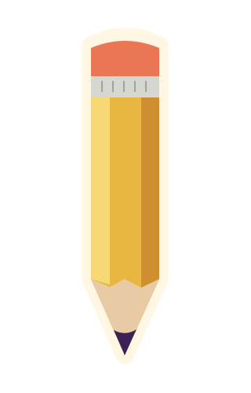
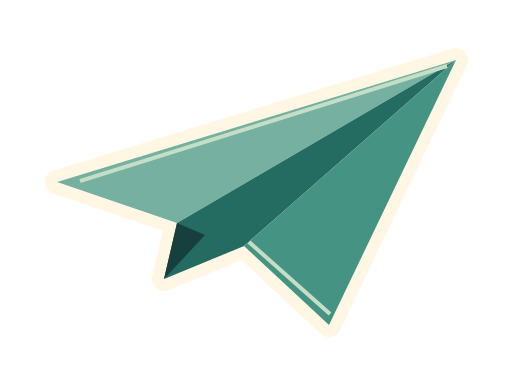

Fold something.
A flat sheet becomes a new shape. Follow a fold, then invent your own next step.
A LITTLE PAPER. A BIG POSSIBILITY.
A day for curious hands and unfinished ideas.
Start with something small. See where it goes.



ONE DAY / MANY SMALL BEGINNINGS
IMAGINED SATURDAY ASSEMBLY
THE COMMUNITY MAKING ROOM
WHAT HAPPENS HERE?
A flat sheet becomes a new shape. Follow a fold, then invent your own next step.
A line does not need a plan. Draw one thing, add another, and find the story between them.
Cut, arrange and combine. A surprising pair of pieces can become the start of something else.
THE BEST PART IS THE START
Snipwhistle is an imagined event created for this design demonstration. The activity descriptions and illustrations show a possible creative programme; this page does not take registrations.